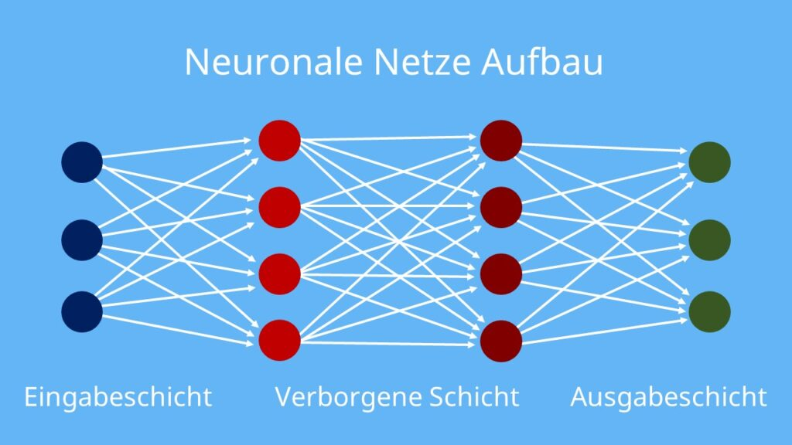
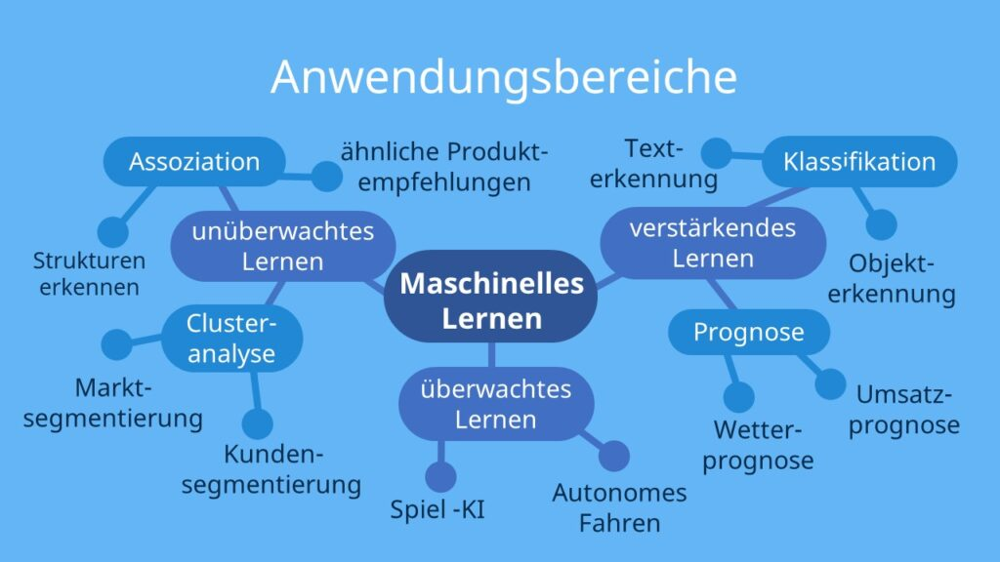

👤Neuronale Netze und maschinelles Lernen👤
Wie funktioniert ein neuronales Netz?
Künstliche Neuronale Netze (KNN) haben sich als beliebtes Werkzeug im Bereich des maschinellen Lernens und der künstlichen Intelligenz etabliert, da sie dem menschlichen Gehirn nachempfunden sind. Sie ermöglichen es, eine Vielzahl von informatischen Problemen zu lösen, wie beispielsweise Spracherkennung oder autonomes Fahren.
Ein neuronales Netzwerk imitiert mithilfe von Algorithmen künstliche Neuronen, die den Nervenzellen im Gehirn ähneln. Diese künstlichen Neuronen sind durch komplexe Verbindungen miteinander verbunden, was es ermöglicht, beispielsweise Aufgaben aus den Bereichen Statistik, Informatik und Wirtschaft zu bewältigen. Ein wichtiger Aspekt ist dabei, dass das neuronale Netzwerk kontinuierlich dazulernt und sich selbst verbessert.
Aufbau eines neuronalen Netzes
Das neuronale Netz besteht aus einer Sammlung von Konten, die als Neuronen bezeichnet werden. Diese Neuronen nehmen Informationen von anderen Neuronen oder von externen Quellen auf, verarbeiten sie und geben anschliessend ein Ergebnis an andere Neuronen weiter. Dieser Informationsaustausch erfolgt über Verbindungen, die als Kanten bezeichnet werden und die Neuronen miteinander verbinden.
Das neuronale Netz wird in 3 Schichten aufgeteilt:
Eingabeschicht: Neuronen nehmen die Informationen aus der Aussenwelt auf und geben die Informationen gewichtet an die verborgene Schicht weiter.
Verborgene Schicht: Sie besteht aus beliebigen vielen Ebenen von Neuronen. In dieser Schicht werden die empfangenen Informationen weitergeleitet und in jeder Ebene der Schicht neu gewichtet. Da die genaue Gewichtung und Verarbeitung der Informationen in dieser Schicht nicht direkt ersichtlich sind, wird sie als verborgene Schicht bezeichnet.
Ausgabeschicht: Bei der letzten Schicht geben die Neuronen die verarbeiteten Informationen als Ergebnis aus. Beispielsweise kann ein Ergebnis eine Wahrscheinlichkeitsverteilung sein. Durch diese Verteilung können anschliessend Entscheidungen abgeleitet werden.

Beispiel Äpfel und Birnen
Eingabeschicht:
Die Eingabeschicht besteht aus Neuronen, die die Farbwerte der Pixel im Bild repräsentieren. Jedes Neuron erhält die Informationen über einen bestimmten Farbwert eines Pixels im Bild. Die Anzahl der Neuronen in der Eingabeschicht entspricht der Anzahl der Pixel im Bild.
Verborgene Schichten:
Das neuronale Netzwerk kann eine oder mehrere versteckte Schichten haben. Jedes Neuron in den versteckten Schichten nimmt die Informationen von den Neuronen in der vorherigen Schicht auf und führt Berechnungen durch, um abstraktere Merkmale des Bildes zu erkennen. In unserem Beispiel könnten die Neuronen in den versteckten Schichten bestimmte Farb- oder Formmuster in den Bildern erkennen, die spezifisch für Äpfel oder Birnen sind.
Ausgabeschicht:
Die Ausgabeschicht besteht aus zwei Neuronen, einem für Äpfel und einem für Birnen. Jedes Neuron gibt die Wahrscheinlichkeit aus, dass das Eingabebild entweder einen Apfel oder eine Birne darstellt. Das Neuron mit der höchsten Wahrscheinlichkeit gibt die vorhergesagte Klassenzugehörigkeit an.
Was ist maschinelles Lernen?
Maschinelles Lernen ist ein Teilgebiet der künstlichen Intelligenz, in dem Computer die Fähigkeit entwickeln, aus Erfahrungen zu lernen und Aufgaben zu bewältigen, ohne dafür explizit programmiert zu werden. Anstatt spezifische Anweisungen für jede Situation zu erhalten, analysiert ein maschinelles Lernsystem Daten, erkennt Muster und trifft Vorhersagen oder nimmt Anpassungen vor.
Der Lernprozess basiert auf Algorithmen, die auf Trainingsdaten basieren. Diese Daten werden dem System zur Verfügung gestellt, damit es Muster, Zusammenhänge und Trends erkennen kann. Durch wiederholtes Training mit verschiedenen Beispielen verbessert das System seine Leistung und ist anschließend in der Lage, neue Daten zu analysieren und Entscheidungen zu treffen.
Es gibt verschiedene Arten von Algorithmen im maschinellen Lernen, wie zum Beispiel überwachtes Lernen, unüberwachtes Lernen und bestärkendes Lernen. Beim überwachten Lernen werden die Algorithmen mit Trainingsdaten und den entsprechenden Labels trainiert, um Vorhersagen zu treffen. Beim unüberwachten Lernen werden die Algorithmen ohne Labels trainiert, um Muster und Strukturen in den Daten zu erkennen. Beim bestärkenden Lernen lernen die Algorithmen durch Interaktion mit der Umgebung, indem sie Belohnungen oder Strafen erhalten.
